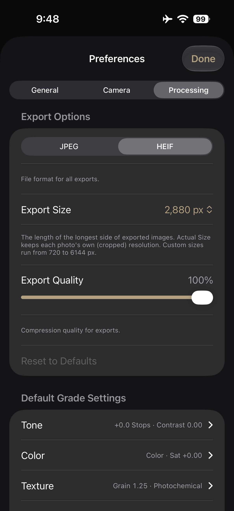

for DC Advanced UX Team.Vivi · Yohan · Libby · Lim Jisu · Katey · Anna
Back Issue

Interaction
Chromagraph: the look arrives after
Chromagraph Camera, $13 on iPhone, is Rian Johnson's stills app, built with cinematographer Steve Yedlin. It starts from RAW and skips Apple's look pipeline, using the grade from their films. Maximum exposure, burst and colour are the controls you see. Tone, saturation and texture appear after the shutter, including on RAWs already in the library. Over the weekend the comparisons spread, because the phone's own grain panel still begins from a processed picture.
크로마그래프 카메라는 13달러짜리 아이폰 스틸 앱이다. 라이언 존슨이 촬영감독 스티브 예들린과 만들었다. RAW에서 시작하고 애플의 룩 파이프라인을 건너뛴 뒤, 두 사람의 영화에 쓰던 그레이드를 올린다. 보이는 조작은 최대 노출, 연사, 색이다. 톤과 채도, 텍스처는 셔터 뒤에 나타나며, 이미 있는 RAW에도 적용된다. 주말 사이 비교 사진이 퍼졌다. 휴대폰 자체의 그레인 패널은 여전히 처리된 사진에서 출발한다.
Bass X Machina opened on Netflix on 3 November with titles by BUCK, set to Janelle Monáe. Studio Mir animates LeSean Thomas's steampunk West, and the sequence goes inside Bass Reeves: hero, outlaw, former slave, lawman, machine. Propaganda-poster art and hard silhouettes sit in red, white and blue. The same language becomes the logo. Kenesha Sneed art-directed it with executive producer Brian Tyree Henry. It plays as a fever dream, history pressed against something worse.
Bass X Machina于11月3日在Netflix开播，片头来自BUCK，配乐是Janelle Monáe。片头走进Bass Reeves：英雄、法外之徒、曾经的奴隶、执法者、机器。宣传画式图形和硬边剪影只用红、白、蓝，同一套语言做成标志。Kenesha Sneed与Brian Tyree Henry定的方向。它像一场发热的梦。
Bass X Machina는 11월 3일 넷플릭스에서 열렸고, 오프닝은 벅이 자넬 모네의 곡 위에 만들었다. 스튜디오 미르가 르숀 토머스의 스팀펑크 서부를 그리고, 시퀀스는 배스 리브스 안으로 들어간다. 영웅, 무법자, 옛 노예, 보안관, 기계. 선전 포스터의 그림과 단단한 실루엣이 빨강, 하양, 파랑 안에 있다. 같은 언어가 로고가 된다. 케네샤 스니드가 총괄 프로듀서 브라이언 타이리 헨리와 방향을 잡았다. 역사와 더 나쁜 것이 붙는 열병이다.
Royal Enfield's Continental GT 750, at EICMA in faired and unfaired forms, keeps the café-racer face and refuses the tablet. The dash is described as a hybrid twin-pod TFT, set against the wide screens now appearing on bikes under 500cc. The faired version lowers the bars. The colours shown are Red Line, TT Blue and Master Clean. Next to the single-pod Tripper Dash on the Guerrilla 450 and Himalayan 450, the bet is a cluster that shows the ride and leaves the rest out.
로열엔필드의 컨티넨탈 GT 750은 EICMA에서 페어링이 있는 버전과 없는 버전으로 나왔다. 카페 레이서의 얼굴을 유지하고 태블릿은 받지 않는다. 계기반은 하이브리드 트윈 포드 TFT로 설명된다. 500cc 미만 바이크에 놓이기 시작한 넓은 화면과 대조된다. 페어링 버전은 핸들을 낮춘다. 보여 준 색은 레드 라인, TT 블루, 마스터 클린이다. 게릴라 450과 히말라얀 450의 싱글 포드 트리퍼 대시 옆에서, 라이딩만 보여주고 나머지는 밖에 두는 클러스터다.
Figma's code layers, still in open beta, now read the prototype connections and interactions between frames when a design becomes code. The wiring already on the canvas is the brief, so the flow does not have to be typed again. A day earlier, shaders became available to everyone and export at up to 4096 pixels. They travel into a code layer and play there, in Chrome 157, from the Play control at the layer's top right.
피그마의 코드 레이어는 아직 오픈 베타다. 디자인을 코드로 만들 때, 프레임 사이에 이미 그어 둔 프로토타입 연결과 인터랙션을 읽는다. 캔버스의 선이 브리프이므로 플로를 다시 타이핑하지 않아도 된다. 하루 전에는 셰이더가 모든 사용자에게 열렸고, 최대 4096픽셀로 내보낸다. 코드 레이어 안으로 들어가 Chrome 157에서 레이어 오른쪽 위의 Play로 재생된다.
P.A.C., a São Paulo bakery, has a logo that is not a formal mark. Polar, two of whose founders are partners in the shop, just types the three letters. Gronland, by Studio Muhittin Güneş, leads, with Rublena from Kyiv Type Foundry beside it. Beatriz Batisteli's line drawings sit against that type, and the receipt printer now runs the daily menu. Bruno Ribeiro treats the system as unfinished, so a bigger room can change the type without a redesign.
圣保罗面包店P.A.C.的标志不是一枚正式标记。Polar有两位创始人是店里的合伙人，三个字母直接打出来。主字体是Studio Muhittin Güneş的Gronland，旁边是Kyiv Type Foundry的Rublena。Beatriz Batisteli的线稿贴在字边，收据打印机印每日菜单。Bruno Ribeiro把系统留成未完成，店面变大时改字即可。
상파울루 빵집 P.A.C.의 로고는 정식 마크가 아니다. 폴라의 창업자 둘이 가게의 파트너이고, 세 글자를 그냥 타이핑한다. 스튜디오 무히틴 귀네시의 그론란드가 본문이고, 키이우 타입 파운드리의 루블레나가 옆에 선다. 베아트리스 바티스텔리의 선화가 글자 옆에 있고, 영수증 프린터가 오늘의 메뉴를 찍는다. 브루노 히베이루는 시스템을 미완성으로 둔다. 공간이 커져도 서체를 바꾸면 되고, 식별 전체를 다시 그리지 않는다.
Physical Atmosphere², from Physical Addons, builds a Blender sky that updates in the viewport. Four procedural cloud layers move when a slider moves, and the haze, sun and moon follow a date, a time and a place. Clouds occlude the scene and cast shadows, instead of sitting as a flat backdrop. An advanced mode opens scattering, ozone and fog. The target is a photoreal sky that stays live while the shot is being lit.
피지컬 애드온의 Physical Atmosphere²는 블렌더 뷰포트에서 바로 갱신되는 하늘을 만든다. 절차적 구름 네 층이 슬라이더를 따라 움직이고, 헤이즈와 해, 달은 날짜와 시간, 장소를 따른다. 구름은 장면을 가리고 그림자를 드리운다. 뒤에 붙인 평면이 아니다. 고급 모드는 산란, 오존, 안개를 연다. 조명을 잡는 동안 사실적인 하늘이 라이브로 남아 있는 것이 목표다.
Safari in the iOS 27.3 developer beta can stack tabs down the left. They start as icons, and the column widens when titles are needed. The switch is in Settings, under Apps, then Safari. On Mac and iPad it is also in the View menu. A site with no dark design gets a Try button, and Safari builds a dark version of that page. Siri can move, sort and close the tabs. Arc made the column familiar, and Arc is due to stop in December.
iOS 27.3 개발자 베타의 사파리는 탭을 왼쪽에 쌓을 수 있다. 기본은 아이콘이고, 제목이 필요하면 열을 넓힌다. 스위치는 설정, 앱, 사파리에 있다. 맥과 아이패드에서는 보기 메뉴에도 있다. 다크 디자인이 없는 사이트에는 Try 버튼이 뜨고, 사파리가 그 페이지의 어두운 버전을 만든다. 시리는 탭을 옮기고, 정렬하고, 닫을 수 있다. 아크가 이 열을 익숙하게 만들었고, 아크는 12월에 멈출 예정이다.
Yinka Ilori's 2026/27 Tottenham away shirt is called We Are Tottenham, Wherever We Go. Navy is cut by streaks of pink, violet, orange and electric blue, with THFC LDN17 for the N17 postcode. On the back, lilac petals, chequered rings and turquoise bands circle COYS. Inside that sits the line I know I am, I'm sure I am, and the outer ring carries the title plus his name. He drew it as artist-in-residence at Heart of Hale, in Tottenham Hale.
Yinka Ilori为热刺设计的2026/27客场球衣名叫We Are Tottenham, Wherever We Go。海军蓝被粉、紫、橙和电光蓝的斜纹切开，THFC LDN17指向N17邮编。背面，淡紫花瓣、棋盘圆环和青绿带子围着COYS。里面是那句I know I am, I'm sure I am，最外圈写着标题和他的名字。这是他在托特纳姆海尔Heart of Hale驻留时画的。
잉카 일로리의 2026/27 토트넘 원정 셔츠 이름은 We Are Tottenham, Wherever We Go다. 네이비는 분홍, 보라, 주황, 일렉트릭 블루의 줄로 갈라지고, THFC LDN17은 N17 우편번호를 가리킨다. 등에는 라일락 꽃잎, 체크 고리, 터콰이즈 띠가 COYS를 두른다. 안에는 I know I am, I'm sure I am이 있고, 바깥 고리에 제목과 그의 이름이 있다. 토트넘 헤일의 하트 오브 헤일 상주 작가로 그렸다.
Norton's 450 Urban, the name still temporary, puts an 8-inch TFT between the mirror stalks. On a bike aimed at A2 riders and due in 2027, the screen reads closer to an e-reader than to a cluster. Around it is a light aluminium frame and a liquid-cooled 454cc single with about 45 Nm, from Norton under TVS. In the EICMA photographs the dash is the first thing in the frame, and it is a lot of glass for a city commute.
노턴의 450 어반은 이름이 아직 임시이고, 미러 스템 사이에 8인치 TFT를 둔다. A2 라이더를 겨냥해 2027년에 나오는 바이크에서, 화면은 클러스터보다 전자책 단말에 가깝다. 가벼운 알루미늄 프레임과, TVS 아래 노턴의 수랭 454cc 단기통, 약 45Nm이 주변을 채운다. EICMA 사진에서 계기반이 프레임 안의 첫 번째이고, 도시 통근용으로는 유리가 많다.
Tom Noakes and Black Kite made KFC's Doom Burger film for the tie-in with Marvel Studios' Avengers: Doomsday, through Mother. The spot is a post-apocalypse played light. Aaron McLisky shot it, Peter Sciberras cut it at Trim, and Adam Crocker with Aurelien Lemonnier led the VFX. The bucket is staged inside the movie's world, rather than parked as a logo on the end of a trailer.
Tom Noakes和Black Kite为肯德基的Doom Burger做了一支片子，对接漫威影业的Avengers: Doomsday，代理是Mother。这是一场被拍得很轻的末日。Aaron McLisky掌镜，Peter Sciberras在Trim剪辑，Adam Crocker和Aurelien Lemonnier负责视效。炸鸡桶被放进电影的世界里，而不是贴在预告片结尾的一枚标志。
톰 노크스와 블랙 카이트는 마블 스튜디오의 어벤져스: 둠스데이와 묶인 KFC의 둠 버거 영상을 만들었다. 대행사는 마더다. 종말을 가볍게 찍은 스폿이다. 아론 매클리키가 찍고, 피터 시베러스가 트림에서 잘랐으며, 애덤 크로커와 오렐리앵 르모니에가 브이에프엑스를 맡았다. 버킷은 예고편 끝의 로고가 아니라 영화의 세계 안에 놓인다.
Kythera's ZZZ shader 2.0, for Zenless Zone Zero models in Blender 5.0 or newer, splits body and face. Toon shading stays on the body, and the face shadow follows a light called Kythera Sun. An add-on by John Daniel Absalud and Kythera le Fae applies the shader, sets the colour spaces and drops in a head-direction empty, so the shadow knows which way the face points. The files are on GitHub, for a model that already carries the game's maps.
Kythera的ZZZ着色器2.0给绝区零的模型用，需要Blender 5.0或更新。身体和脸分开。身体保持卡通着色，脸部阴影跟着一盏叫Kythera Sun的灯。John Daniel Absalud和Kythera le Fae的插件会套上着色器、设好色彩空间，并放进一个头部朝向空物体，让阴影知道脸朝哪边。文件在GitHub上，给已经带着游戏贴图的模型用。
키테라의 ZZZ 셰이더 2.0은 젠레스 존 제로 모델을 위한 것이고, 블렌더 5.0 이상이 필요하다. 몸과 얼굴을 나눈다. 몸은 툰 셰이딩을 유지하고, 얼굴 그림자는 키테라 선이라는 라이트를 따른다. 존 대니얼 압살루드와 키테라 르 페의 애드온이 셰이더를 적용하고, 컬러 스페이스를 맞추고, 머리 방향 엠프티를 넣어 그림자가 얼굴의 방향을 알게 한다. 파일은 깃허브에 있고, 게임 맵을 이미 가진 모델용이다.
In the iOS 27.3 developer preview, Siri can act inside third-party apps and can use what is on the screen. An app skill bundles several steps into one request. If the app is in front, in a Live Activity, or already the subject, its name can stay unspoken: change my ride pickup is enough. The same reach covers Calendar, Mail, Maps, Messages, Photos, Safari and more. Inside a supported app, asking what it can do there lists the actions.
iOS 27.3 개발자 프리뷰에서 시리는 서드파티 앱 안에서 행동하고, 화면에 있는 것을 쓸 수 있다. 앱 스킬은 여러 단계를 요청 하나로 묶는다. 앱이 앞에 있거나, 라이브 액티비티에 있거나, 이미 대화의 대상이면 이름을 말하지 않아도 된다. 픽업 위치를 바꾸라는 말로 충분하다. 같은 범위에 캘린더, 메일, 지도, 메시지, 사진, 사파리 등이 들어간다. 지원되는 앱 안에서 무엇을 할 수 있는지 물으면 동작이 나열된다.
Daniel Jurman's loops last a few seconds and look pinched from clay, lumps left in. A fridge in trainers runs a treadmill. Burgers grow on a tree while two watering cans work. A taxi hangs over a dusk skyline. Apples on a stall open into a microphone, a dish and an eye. He points at the five-second MTV bumpers between Beavis and Butt-Head. The New York illustrator, represented by Snyder, builds them as pixels that keep a stop-motion crease.
Daniel Jurman的循环只有几秒，看起来像被捏出来的黏土，肿块还留着。一台穿着运动鞋的冰箱在跑步机上跑。汉堡长在树上，两只洒水壶给它们浇水。一辆出租车悬在黄昏的天际线上。摊上的苹果打开，里面是麦克风、天线和一只眼睛。他指向《Beavis and Butt-Head》之间那种五秒的MTV插片。这位纽约插画师由Snyder代理，用像素做出定格动画才有的折痕。
대니얼 주먼의 루프는 몇 초이고, 점토를 집어 만든 것처럼 보이며 혹이 남아 있다. 운동화를 신은 냉장고가 러닝머신 위를 달린다. 햄버거가 나무에서 자라고, 물뿌리개 두 개가 물을 준다. 택시는 해 질 녘 스카이라인 위에 매달린다. 가판대의 사과가 열리면 마이크, 접시 안테나, 눈이 나온다. 그는 비비스 앤 버트헤드 사이의 5초 MTV 범퍼를 가리킨다. 스나이더 소속의 이 뉴욕 일러스트레이터는 픽셀로 스톱모션의 주름을 남긴다.
iPhone Duo's outer screen is wide enough that one hand cannot cross it. iOS 27.3, in the developer beta, adds a Reachability that moves sideways. A short swipe at the edge slides the whole interface left or right. On a tall iPhone the same control still pulls the screen down. The switch sits under Settings, Accessibility, Reachability. The wide phone was due this in a later update. The beta has it now, with a public release aimed at December.
아이폰 듀오의 바깥 화면은 한 손이 가로지르기 어려울 만큼 넓다. iOS 27.3 개발자 베타는 옆으로 움직이는 리치어빌리티를 넣는다. 가장자리를 짧게 스와이프하면 인터페이스 전체가 왼쪽이나 오른쪽으로 미끄러진다. 세로로 긴 아이폰에서는 같은 조작이 여전히 화면을 아래로 당긴다. 스위치는 설정, 손쉬운 사용, 리치어빌리티에 있다. 넓은 폰은 이후 업데이트로 예정돼 있었다. 베타에 지금 들어 있고, 공개 버전은 12월을 향한다.
Twogather's DA1 is an instant camera with no screen, no gallery and no app. A shot comes out of a thermal roll as a black-and-white print you can hand over. The Clear body shows the print path and the board. Neon keeps the same rounded square and circular lens. A screw-on finder frames the shot, and five markers draw on the paper. A roll is about 50 frames, and the camera keeps no file. Neon is $98 and Clear is $110, with shipping set for November.
트와게더의 DA1은 화면도, 갤러리도, 앱도 없는 즉석 카메라다. 한 장이 감열 롤에서 흑백 인화로 나와 바로 건넬 수 있다. 클리어 바디는 용지 경로와 기판을 보여 준다. 네온은 같은 둥근 사각 몸과 원형 렌즈를 유지한다. 나사식 파인더가 프레이밍을 돕고, 마커 다섯 개로 종이 위에 그린다. 롤은 약 50장이고, 카메라는 파일을 남기지 않는다. 네온은 98달러, 클리어는 110달러이며 배송은 11월이다.
Koto's new report argues that electric brands get harder to separate as the technology, the interfaces and the spec sheets converge. An 18-point assessment ranks Rivian first for brand, at 7.8, and Volkswagen last of the ten, at 4.8. One question is whether an EV is a car or a computer that keeps updating. Physical switches on Renault, and buttons returning to VW's ID cabins, are the pendulum moving back toward a car. In China the same object is read as a connected service.
코토의 새 보고서는 기술과 인터페이스, 제원표가 모일수록 전기차 브랜드가 갈라지기 어려워진다고 본다. 18개 항목 평가에서 리비안이 브랜드 1위, 7.8점이고, 폭스바겐은 열 곳 중 마지막, 4.8점이다. 한 가지 질문은 전기차가 자동차인지, 계속 업데이트되는 컴퓨터인지다. 르노의 물리 스위치와 폭스바겐 ID 실내로 돌아온 버튼은 추가 자동차 쪽으로 되돌아가는 흔들림이다. 중국에서 같은 물건은 연결된 서비스로 읽힌다.